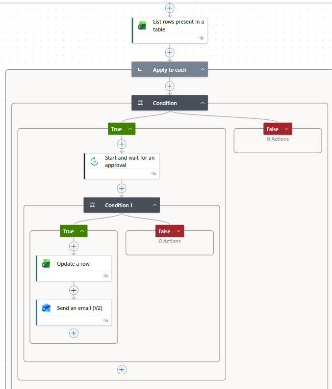

As a QAD intern, I noticed a recurring backlog: change controls sat open past their due dates because the person responsible for submitting evidence simply forgot, and there was no consistent process nudging them. Worse, even after someone finished their part, the tracking sheet often didn't reflect it — status updates depended on someone remembering to go back and edit the spreadsheet by hand.
A closed-loop automation combining an Excel log with a Power Automate flow that doesn't just remind people — it acts on their response:
The actual Power Automate flow, showing the check-overdue → request-approval → update-and-notify logic:

Figure: The flow lists all tracked items, filters to what's overdue, requests an approval-style response from the owner, then conditionally updates the sheet and notifies the process owner.
The table below uses placeholder names and emails to illustrate the tracker's structure — no real personnel data is shown.
| Change ID | Assigned To | Assigned To Email | Due Date | Status |
|---|---|---|---|---|
| CHG-001 | Jane D. | jane.d@example.com | 03-Jul-2026 | In Progress |
| CHG-002 | Sam R. | sam.r@example.com | 03-Jul-2026 | In Progress |
| CHG-003 | Alex M. | alex.m@example.com | 08-Jul-2026 | Completed |
This wasn't part of my assigned scope. I noticed the same backlog forming week after week, and that even resolved items often lagged in the tracker because updating it was a manual afterthought. Rather than just automating the reminder, I closed the loop: the person doing the work confirms completion in one click, and the system handles the bookkeeping.
Note: all names, emails, and case details shown here are illustrative and anonymized. No confidential or proprietary company data is reproduced.